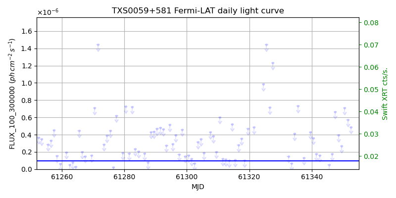
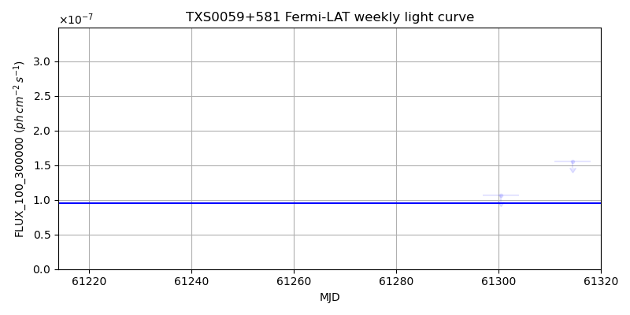
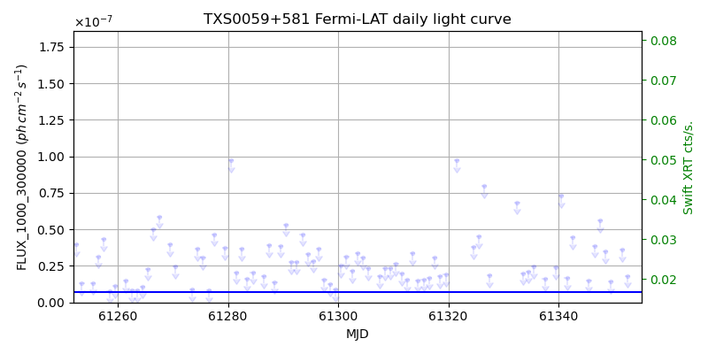
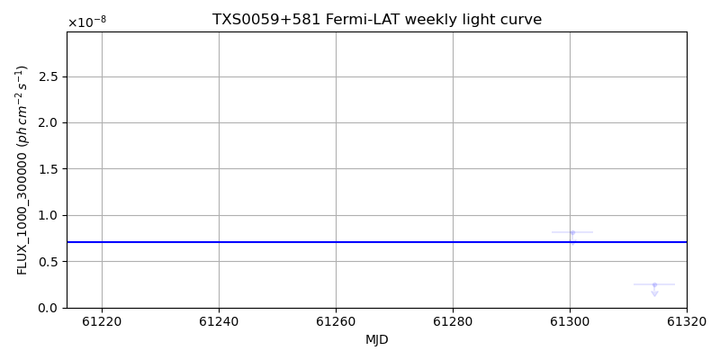

LAT Lightcurve site: https://fermi.gsfc.nasa.gov/ssc/data/access/lat/msl_lc/source/TXS_0059p581
Swift site: https://www.swift.psu.edu/monitoring/source.php?source=TXS0059+581
NED: Query
Time of last update of this page: UT: 2026-11-06 16:11 (MJD: 61350.675)
| Property | Value |
|---|---|
| R.A. | 1:02:45.84 |
| Dec. | 58:24:10.8 |
| z | 0.644 |
| 3FGL SpectrumType | LogParabola |
| 3FGL PL Index | |
| 3FGL Flux_100_300000 | 9.47e-08 1 / (s cm2) |
| 3FGL Flux_1000_300000 | 7.08e-09 1 / (s cm2) |
| 3FGL Flux >200 GeV | 3.25e-12 1 / (s cm2) |
| 3FGL Extrap. Crab >200 GeV | 0.01 |
| 3FGL Flux After EBL Absorption >200GeV | 2.99e-13 1 / (s cm2) |
| 3FGL EBL Crab Fraction >200GeV | 0.00 |

| MJD | dMJD | Flux | dFlux | Frac3FGL | FracCrab>200GeV | EBLFracCrab>200GeV |
|---|---|---|---|---|---|---|
| 61345.50 | 0.50 | 4.84e-08 | 0.00e+00 | 0.00 | 0.00 | 0.00 |
| 61346.50 | 0.50 | 1.77e-07 | 0.00e+00 | 0.00 | 0.00 | 0.00 |
| 61347.50 | 0.50 | 6.64e-07 | 0.00e+00 | 0.00 | 0.00 | 0.00 |
| 61348.50 | 0.50 | 3.94e-07 | 0.00e+00 | 0.00 | 0.00 | 0.00 |
| 61349.50 | 0.50 | 2.69e-07 | 0.00e+00 | 0.00 | 0.00 | 0.00 |

| MJD | dMJD | Flux | dFlux | Frac3FGL | FracCrab>200GeV | EBLFracCrab>200GeV |
|---|---|---|---|---|---|---|
| 61027.50 | 3.50 | 1.83e-07 | 0.00e+00 | 0.00 | 0.00 | 0.00 |
| 61041.50 | 3.50 | 2.42e-07 | 0.00e+00 | 0.00 | 0.00 | 0.00 |
| 61223.50 | 3.50 | 1.86e-06 | 0.00e+00 | 0.00 | 0.00 | 0.00 |
| 61300.50 | 3.50 | 1.06e-07 | 0.00e+00 | 0.00 | 0.00 | 0.00 |
| 61314.50 | 3.50 | 1.55e-07 | 0.00e+00 | 0.00 | 0.00 | 0.00 |

| MJD | dMJD | Flux | dFlux | Frac3FGL | FracCrab>200GeV | EBLFracCrab>200GeV |
|---|---|---|---|---|---|---|
| 61345.50 | 0.50 | 1.52e-08 | 0.00e+00 | 0.00 | 0.00 | 0.00 |
| 61346.50 | 0.50 | 3.88e-08 | 0.00e+00 | 0.00 | 0.00 | 0.00 |
| 61347.50 | 0.50 | 5.60e-08 | 0.00e+00 | 0.00 | 0.00 | 0.00 |
| 61348.50 | 0.50 | 3.49e-08 | 0.00e+00 | 0.00 | 0.00 | 0.00 |
| 61349.50 | 0.50 | 1.41e-08 | 0.00e+00 | 0.00 | 0.00 | 0.00 |

| MJD | dMJD | Flux | dFlux | Frac3FGL | FracCrab>200GeV | EBLFracCrab>200GeV |
|---|---|---|---|---|---|---|
| 61027.50 | 3.50 | 1.20e-08 | 0.00e+00 | 0.00 | 0.00 | 0.00 |
| 61041.50 | 3.50 | 2.67e-09 | 0.00e+00 | 0.00 | 0.00 | 0.00 |
| 61223.50 | 3.50 | 7.33e-07 | 0.00e+00 | 0.00 | 0.00 | 0.00 |
| 61300.50 | 3.50 | 8.11e-09 | 0.00e+00 | 0.00 | 0.00 | 0.00 |
| 61314.50 | 3.50 | 2.52e-09 | 0.00e+00 | 0.00 | 0.00 | 0.00 |
--------------------------------------------------------- Using user-supplied coords: 1:02:45.84 58:24:10.8 2000 --------------------------------------------------------- FLWO UT night of: 2026-11-07 Local Sid. @ Midnight: 02:42 Sunset (-15.0) (local, UT): 18:39 01:39 Sunrise (-15.0) (local, UT): 05:36 12:36 Moonrise (local, UT): 05:16 12:16 Moonset (local, UT): Moon phase: 0.04 --------------------------------------------------------- AzTime LSID UT Obj_el Obj_az Mn_el Mn_az Sep. --------------------------------------------------------- 18:39 21:20 01:39 44.1 37.1 -35.5 278.9 132.9 19:09 21:50 02:09 47.9 35.7 -41.6 283.5 133.0 19:39 22:20 02:39 51.6 33.4 -47.5 288.8 133.1 20:09 22:50 03:09 54.9 30.0 -53.3 295.3 133.2 20:39 23:20 03:39 57.9 25.5 -58.7 303.4 133.3 21:09 23:50 04:09 60.4 19.5 -63.5 313.9 133.4 21:39 00:20 04:39 62.1 12.2 -67.5 328.0 133.5 22:09 00:50 05:09 63.0 3.9 -70.0 346.2 133.6 22:39 01:20 05:39 63.0 355.3 -70.5 6.9 133.7 23:09 01:51 06:09 62.0 347.0 -68.8 26.6 133.8 23:39 02:21 06:39 60.2 339.9 -65.4 42.5 133.9 00:09 02:51 07:09 57.6 334.0 -60.9 54.4 134.0 00:39 03:21 07:39 54.6 329.6 -55.8 63.5 134.1 01:09 03:51 08:09 51.2 326.3 -50.2 70.6 134.2 01:39 04:21 08:39 47.6 324.2 -44.4 76.4 134.4 02:09 04:51 09:09 43.7 322.8 -38.4 81.4 134.5 02:39 05:21 09:39 39.9 322.3 -32.4 85.8 134.6 03:09 05:51 10:09 35.9 322.3 -26.3 89.9 134.7 03:39 06:21 10:39 32.0 322.8 -20.2 93.7 134.8 04:09 06:51 11:09 28.2 323.8 -14.2 97.5 134.9 04:39 07:21 11:39 24.5 325.1 -8.1 101.2 135.0 05:09 07:52 12:09 20.9 326.9 -1.2 105.0 135.2 05:36 08:19 12:36 17.8 328.7 3.4 108.6 135.3 --------------------------------------------------------- Dark hours >55 deg.: 4.43 srcstart (UT): 2026-11-07 03:09 srcend (UT): 2026-11-07 07:35